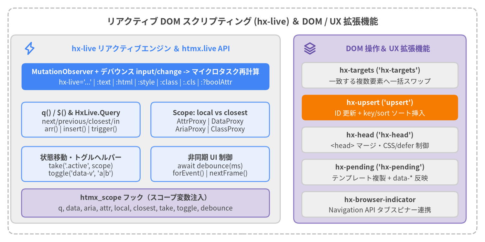

リアクティブ DOM スクリプティング＆ DOM 操作拡張機能
htmx v4.0.1 は、DOM ネイティブなリアクティブ式・型付き状態プロキシ・非同期 UI 制御を提供する hx-live（htmx.live）と、複数ターゲットへの一括スワップ・キー付きソート Upsert・<head> マージ・楽観的ペンディング UI・ブラウザ標準タブスピナーを実現する 5 つの DOM / UX 拡張機能（hx-targets、hx-upsert、hx-head、hx-pending、hx-browser-indicator）を同梱しています。
| シンボル | 登録名 / 名前空間 | ソースファイル | カテゴリ | 主な役割 |
|---|---|---|---|---|
hx-live |
'hx-live' |
src/ext/hx-live.js |
リアクティブ DOM | MutationObserver とデバウンスされた input/change イベントで駆動する hx-live エフェクト属性および :attr / hx-live:attr バインディング。 |
q / $ |
htmx.live.q / $ |
src/ext/hx-live.js |
リアクティブ DOM | 方向指定（next、previous、closest、first、last）および in スコープ指定に対応した拡張 DOM クエリ関数。 |
HxLive.Query |
q(...) 戻り値型 |
src/ext/hx-live.js |
リアクティブ DOM | 状態バッグ（attr、data、aria、class）、DOM 操作（take、toggle、trigger、insert）、配列メソッド、DOM プロパティ透過を備えた複数要素プロキシ。 |
HxLive.Scope |
local / closest |
src/ext/hx-live.js |
リアクティブ DOM | 要素ローカル（local）と祖先カスケード（closest）の 2 種類の状態解決スコープ（attr、data、aria、class）。 |
HxLive.AttrProxy |
attr.* |
src/ext/hx-live.js |
リアクティブ DOM | 論理属性、プロパティ連動属性（value、checked）、数値属性、data-*、aria-* を型付きで読み書きする属性プロキシ。 |
HxLive.DataProxy |
data.* |
src/ext/hx-live.js |
リアクティブ DOM | JSON 自動パース、camelCase ⇔ kebab-case 変換、祖先カスケードを備えた data-* 状態プロキシ。 |
HxLive.AriaProxy |
aria.* |
src/ext/hx-live.js |
リアクティブ DOM | 真偽値・3 値状態・トークン・数値・ID 参照配列をサポートする WAI-ARIA 1.2 型付き状態プロキシ。 |
HxLive.ClassProxy |
class.* / attr.class |
src/ext/hx-live.js |
リアクティブ DOM | 論理プロパティアクセス（class.open = true）および複数要素一括の assign、add、remove、toggle、replace、contains。 |
take |
htmx.live.take |
src/ext/hx-live.js |
リアクティブ DOM | クラス（.cls）、aria-* 状態、または属性を兄弟／スコープ内要素から対象要素へ排他的に移動します。 |
toggle |
htmx.live.toggle |
src/ext/hx-live.js |
リアクティブ DOM | クラス、aria-* 状態、または属性の ON/OFF 反転および複数値のローテーションを行います。 |
debounce |
htmx.live.debounce |
src/ext/hx-live.js |
リアクティブ DOM | 後続呼び出しで古い待機を自動キャンセルする await 可能な Promise またはコールバック型デバウンス。 |
refresh |
htmx.live.refresh |
src/ext/hx-live.js |
リアクティブ DOM | 登録済みの全 hx-live 式・バインディングのマイクロタスク再計算を手動でスケジュールします。 |
forEvent |
htmx.live.forEvent |
src/ext/hx-live.js |
リアクティブ DOM | イベント名、ミリ秒タイムアウト、時間文字列、および EventTarget のうち最初に発火したものを解決する Promise。 |
nextFrame |
htmx.live.nextFrame |
src/ext/hx-live.js |
リアクティブ DOM | 次の requestAnimationFrame ティックで解決される Promise を返します。 |
hx-targets |
'hx-targets' |
src/ext/hx-targets.js |
DOM 操作＆ UX | hx-targets セレクタに一致するすべての要素へメインレスポンスのクローンを一括スワップします。 |
hx-upsert |
'upsert' |
src/ext/hx-upsert.js |
DOM 操作＆ UX | 既存 id 要素のインプレース更新と、key:<attr>・sort/sort:desc による新規要素のソート挿入を行います。 |
hx-head |
'hx-head' |
src/ext/hx-head.js |
DOM 操作＆ UX | <head> タグをマージ／追記し、ブロッキング CSS・スクリプトの待機と defer スクリプトの遅延実行を行います。 |
hx-pending |
'hx-pending' |
src/ext/hx-pending.js |
DOM 操作＆ UX | リクエスト中に <template> 等をクローン表示し、送信パラメータを data-* に自動反映してスワップ／エラー時に復元します。 |
hx-browser-indicator |
'browser-indicator' |
src/ext/hx-browser-indicator.js |
DOM 操作＆ UX | Navigation API（event.intercept()）を用いてブラウザ標準のタブスピナー表示と停止ボタンによる abort() 連携を実現します。 |

Source Code
from drawlib.canvas import save, setup
from drawlib.icons import phosphor
from drawlib.lines import line
from drawlib.shapes import rectangle
from drawlib.styles import Styles
from drawlib.text import text
setup(width=180, height=90, dpi=150)
# Outer frame
rectangle((90, 45), width=174, height=84, style=Styles.MutedDashed.patch(shape_r=2.5))
text(
(90, 82.0),
"リアクティブ DOM スクリプティング (hx-live) ＆ DOM / UX 拡張機能",
style=Styles.DarkBold.patch(text_size=13.0),
)
# Left Panel: hx-live & htmx.live Engine
rectangle((54, 42), width=100, height=70, style=Styles.Neutral.patch(shape_r=2.0))
phosphor.lightning((11, 72), width=4.8, style=Styles.PrimaryBold)
text((56, 72), "hx-live リアクティブエンジン ＆ htmx.live API", style=Styles.PrimaryBold.patch(text_size=11.0))
# Scheduler Bar (Focal Point 1)
rectangle((54, 61.5), width=92, height=10, style=Styles.PrimaryFlat.patch(shape_r=1.5))
text((54, 63.3), "MutationObserver + デバウンス input/change -> マイクロタスク再計算", style=Styles.WhiteBold.patch(text_size=10.2))
text((54, 59.3), "hx-live='...' | :text | :html | :style | :class | :.cls | :?boolAttr", style=Styles.White.patch(text_size=10.0))
# Query & Proxies Grid (2x2 inside Left Panel)
rectangle((30, 45.5), width=44, height=13, style=Styles.PrimaryNeutral.patch(shape_r=1.5))
text((30, 48.0), "q() / $() & HxLive.Query", style=Styles.DarkBold.patch(text_size=10.2))
text((30, 43.3), "next/previous/closest/in\narr() | insert() | trigger()", style=Styles.Dark.patch(text_size=10.0))
rectangle((78, 45.5), width=44, height=13, style=Styles.PrimaryNeutral.patch(shape_r=1.5))
text((78, 48.0), "Scope: local vs closest", style=Styles.DarkBold.patch(text_size=10.2))
text((78, 43.3), "AttrProxy | DataProxy\nAriaProxy | ClassProxy", style=Styles.Dark.patch(text_size=10.0))
rectangle((30, 29.0), width=44, height=13, style=Styles.PrimaryNeutral.patch(shape_r=1.5))
text((30, 31.5), "状態移動・トグルヘルパー", style=Styles.DarkBold.patch(text_size=10.2))
text((30, 26.8), "take('.active', scope)\ntoggle('data-v', 'a|b')", style=Styles.Dark.patch(text_size=10.0))
rectangle((78, 29.0), width=44, height=13, style=Styles.PrimaryNeutral.patch(shape_r=1.5))
text((78, 31.5), "非同期 UI 制御", style=Styles.DarkBold.patch(text_size=10.2))
text((78, 26.8), "await debounce(ms)\nforEvent() | nextFrame()", style=Styles.Dark.patch(text_size=10.0))
rectangle((54, 14.5), width=92, height=10.5, style=Styles.SecondaryNeutral.patch(shape_r=1.5))
text((54, 16.5), "htmx_scope フック（スコープ変数注入）", style=Styles.DarkBold.patch(text_size=10.2))
text((54, 12.5), "q, data, aria, attr, local, closest, take, toggle, debounce", style=Styles.Dark.patch(text_size=10.0))
# Right Panel: DOM & UX Extensions
rectangle((141, 42), width=64, height=70, style=Styles.SecondaryNeutral.patch(shape_r=2.0))
phosphor.stack((115, 72), width=4.8, style=Styles.SecondaryBold)
text((144, 72), "DOM 操作＆ UX 拡張機能", style=Styles.SecondaryBold.patch(text_size=11.0))
rectangle((141, 62.0), width=58, height=9.5, style=Styles.Neutral.patch(shape_r=1.5))
text((141, 63.8), "hx-targets ('hx-targets')", style=Styles.DarkBold.patch(text_size=10.2))
text((141, 59.8), "一致する複数要素へ一括スワップ", style=Styles.Dark.patch(text_size=10.0))
# Focal Point 2: hx-upsert
rectangle((141, 50.0), width=58, height=9.5, style=Styles.AccentFlat.patch(shape_r=1.5))
text((141, 51.8), "hx-upsert ('upsert')", style=Styles.WhiteBold.patch(text_size=10.2))
text((141, 47.8), "ID 更新 + key/sort ソート挿入", style=Styles.White.patch(text_size=10.0))
rectangle((141, 38.0), width=58, height=9.5, style=Styles.Neutral.patch(shape_r=1.5))
text((141, 39.8), "hx-head ('hx-head')", style=Styles.DarkBold.patch(text_size=10.2))
text((141, 35.8), "<head> マージ・CSS/defer 制御", style=Styles.Dark.patch(text_size=10.0))
rectangle((141, 26.0), width=58, height=9.5, style=Styles.Neutral.patch(shape_r=1.5))
text((141, 27.8), "hx-pending ('hx-pending')", style=Styles.DarkBold.patch(text_size=10.2))
text((141, 23.8), "テンプレート複製 + data-* 反映", style=Styles.Dark.patch(text_size=10.0))
rectangle((141, 14.0), width=58, height=9.5, style=Styles.Neutral.patch(shape_r=1.5))
text((141, 15.8), "hx-browser-indicator", style=Styles.DarkBold.patch(text_size=10.2))
text((141, 11.8), "Navigation API タブスピナー連携", style=Styles.Dark.patch(text_size=10.0))
save()
リアクティブ DOM スクリプティング (hx-live & htmx.live)#
hx-live#
リアクティブ DOM 式エンジン（'hx-live'）を登録し、DOM の変更（MutationObserver）やフォームの input/change イベントが発生するたびに hx-live エフェクト文および :attr / hx-live:attr バインディングを自動再評価します。
<!-- 登録とオプション設定 -->
<script src="/ext/hx-live.js"></script>
<meta name="htmx-config" content="extensions:hx-live, live.inputDebounce:100, live.bindPrefix:':', live.useDollar:true">
<!-- リアクティブバインディング (:text, :?disabled, :.cls) とエフェクト (hx-live) -->
<div data-price="25" data-qty="2">
<input type="number" name="qty" :value="data.qty" hx-on:input="data.qty = this.valueAsNumber || 0">
<output :text="`$${data.price * data.qty}`"></output>
<button :?disabled="data.qty <= 0" :.highlight="data.qty >= 10">購入手続きへ</button>
</div>
| 種別 | 名前 | 型 / デフォルト値 | 説明 |
|---|---|---|---|
| 登録名 | 'hx-live' |
htmx.registerExtension('hx-live', ...) |
htmx.live を公開し、htmx_scope でヘルパー変数を式スコープへ注入します。スワップ中（htmx_before_swap〜htmx_finally_swap）は再計算を保留し、完了後に 1 回にまとめて実行します。 |
| エフェクト属性 | hx-live |
JavaScript 文（非同期対応） | DOM 属性・テキスト・子要素や入力値の変化時に任意の同期／async JavaScript 文を実行します。await を含むエフェクトが実行中の場合、重複実行はスキップされます。 |
| テキスト / HTML バインド | :text / :html (hx-live:text / hx-live:html) |
JS 式 -> string |
式の評価結果が変化した際に elt.textContent または elt.innerHTML を更新します（null/undefined は "" に変換）。 |
| スタイルバインド | :style (hx-live:style) |
JS 式 -> string | Record<string, any> |
elt._htmx.liveStyles でインライン CSS プロパティを管理し、camelCase キーを kebab-case に変換して不要になったプロパティを自動削除します。 |
| クラスバインド | :class / :.<className> |
JS 式 -> string | Record<string, boolean> / boolean |
:class は複数クラスの動的マップ（{ 'bg-blue text-white': isActive }）を管理し、:.active="expr" は単一クラス active を切り替えます。 |
| 論理・一般属性バインド | :?<attr> / :<attr> |
JS 式 -> boolean / any |
:?attr は elt.toggleAttribute(attr, !!value) を強制します。:<attr> は AttrProxy の型ルール（論理・プロパティ・数値・data-*・aria-*）に従って書き込みます。 |
| 設定 | htmx.config.live.inputDebounce |
number | string (100) |
ドキュメント全体の input イベントによる再計算のデバウンス時間（ミリ秒）。change イベントと MutationObserver は次のマイクロタスクで即座にスケジュールされます。 |
| 設定 | htmx.config.live.bindPrefix |
string | false (":") |
hx-live: と併用される短縮バインド接頭辞。window.Alpine が検出された場合は衝突防止のため自動的に無効化（""）され警告が出力されます。 |
| 設定 | htmx.config.live.useDollar |
boolean (false) |
hx-live、:attr、hx-on、js: 式および hx-trigger フィルタ内で q の別名として $ を注入します。 |
<!-- await debounce() を用いた非同期 hx-live エフェクト -->
<section data-query="">
<input type="search" placeholder="アイテムを絞り込む..." hx-on:input="data.query = value">
<p hx-live="
await debounce(250);
q('.item').forEach(el => {
el.hidden = !el.textContent.toLowerCase().includes(data.query.toLowerCase());
});
"></p>
</section>
q / $#
DOM を検索して一致した要素群を HxLive.Query プロキシでラップします。方向セレクタ（next、previous、closest、first、last）およびルートスコープ指定（in）をサポートします。
// グローバル API
htmx.live.q(selectorOrElementOrIterable): HxLive.Query
htmx.live.$(selectorOrElementOrIterable): HxLive.Query
// hx-live, :attr, hx-on, js:, hx-trigger フィルタ式内 (`this` 要素を起点として動作):
q(selectorOrElementOrIterable): HxLive.Query
| 引数 / 構文 | 記述例 | 起点 / スコープ | 説明 |
|---|---|---|---|
| 標準 CSS セレクタ | q('.card') |
document（または in ルート） |
ドキュメント順で .card に一致するすべての要素を取得します。 |
| 要素 / Iterable | q(this) / q(nodeList) |
直接ラップ | 単一の Element または Iterable<Element> を Query プロキシにラップします。 |
next / previous |
q('next .panel') / q('previous input') |
現在の要素（this） |
起点要素より後（DOCUMENT_POSITION_FOLLOWING）または前（DOCUMENT_POSITION_PRECEDING）にある最初の一致要素を取得します。 |
closest |
q('closest .modal') |
現在の要素（this） |
this.closest('.modal') の結果（0 個または 1 個）をラップします。 |
first / last |
q('first .tab') / q('last .tab') |
document（または in ルート） |
一致した要素リストの先頭または末尾の 1 要素のみを切り出します。 |
in スコープ指定 |
q('input in closest form') / q('.row in this') |
一致したルート要素群 | 検索範囲を this（in this / in me）または document.querySelectorAll(rootSelector) の子孫に限定します。 |
<!-- hx-on と :text バインディング内での方向セレクタ・in スコープの活用 -->
<form class="checkout-form">
<input type="checkbox" class="item-check" checked>
<input type="checkbox" class="item-check">
<span :text="`${q('.item-check:checked in closest form').count} 件選択中`"></span>
<button type="button" hx-on:click="q('next .details in closest form').toggle('hidden')">
詳細を表示 / 非表示
</button>
<div class="details" hidden>注文内訳...</div>
</form>
HxLive.Query#
q() / $() が返す複数要素対応の Proxy オブジェクトです。状態バッグ（attr、data、aria、class）、DOM 変更ヘルパー（take、toggle、trigger、insert）、Array.prototype メソッド、および DOM プロパティ／メソッドの一括透過呼び出しを統合します。
interface HxLive.Query extends Iterable<Element> {
readonly count: number;
arr(): Element[];
q(selector: string): HxLive.Query;
readonly attr: HxLive.AttrProxy;
readonly data: HxLive.DataProxy;
readonly aria: HxLive.AriaProxy;
readonly class: HxLive.ClassProxy & DOMTokenList;
readonly local: HxLive.Scope;
readonly closest: HxLive.Closest;
take(name: string, scope?: string | Node | { from: string }): HxLive.Query;
toggle(name: string, ...values: any[]): HxLive.Query;
trigger(type: string, detail?: any, bubbles?: boolean): HxLive.Query;
insert(pos: 'before' | 'after' | 'start' | 'end' | 'into' | 'replace', html: string): HxLive.Query;
[domPropertyOrArrayMethod: string]: any;
}
| メンバ | 戻り値 / 動作 | 説明 |
|---|---|---|
count |
number |
一致した要素の数（elts.length）。 |
arr() |
Element[] |
一致した Element 配列の浅いコピーを返します。 |
q(selector) |
HxLive.Query |
各一致要素をアンカーとして selector を再実行し（next/previous は e.parentElement、それ以外は e をルートに設定）、重複を除いた Query を返します。 |
attr, aria, class |
状態プロキシ（local） |
選択された要素自身（cascades = false）に対する属性・ARIA・クラスプロキシ。 |
data |
HxLive.DataProxy（closest） |
選択された各要素から最も近い所有祖先を辿るカスケード（cascades = true）data-* プロキシ。 |
local / closest |
HxLive.Scope / HxLive.Closest |
非カスケード（local）またはカスケード（closest）を明示指定する状態スコープ。 |
take(name, scope?) |
this (HxLive.Query) |
一致した全要素に対して take を実行し、メソッドチェーン用に自身を返します。 |
toggle(name, ...values) |
this (HxLive.Query) |
一致した全要素に対して toggle を実行し、メソッドチェーン用に自身を返します。 |
trigger(type, detail?, bubbles?) |
this (HxLive.Query) |
一致した全要素で htmx.trigger() により CustomEvent を発火します（bubbles のデフォルトは true）。 |
insert(pos, html) |
this (HxLive.Query) |
'before'（beforebegin）、'after'（afterend）、'start'（afterbegin）、'end'（beforeend）、'into'（innerHTML）、'replace'（outerHTML）の位置に html を挿入し、htmx.process(parent) を実行します。 |
| 配列メソッド | map, filter, reduce, forEach, some, every, find, at, ... |
Array.prototype の 19 メソッド（map, filter, reduce, reduceRight, forEach, some, every, find, findIndex, findLast, findLastIndex, flatMap, flat, slice, indexOf, lastIndexOf, includes, join, at）をバインドして提供します。 |
| DOM 透過アクセス | プロパティ読み書き / メソッド呼び出し | 読み取りは先頭要素 elts[0]?.[prop] を返し（style 等のオブジェクトは qProxy で再ラップ）、メソッド呼び出しとプロパティ代入（関数アップデータ cur => next 対応）は全要素に対して実行され、再計算をスケジュールします。 |
// Query のチェーン操作、DOM プロパティ透過、関数アップデータの活用
const cards = htmx.live.q('.todo-card');
cards.q('.badge').textContent = (cur) => cur.toUpperCase();
cards.filter(el => !el.hidden).forEach((el, idx) => {
el.dataset.index = idx;
});
htmx.live.q('#todo-list').insert('end', '<li hx-get="/item/new">新規アイテム</li>');
HxLive.Scope#
4 つの状態バッグ（attr、data、aria、class）を、要素自身のみを対象とする local と、属性・クラスを所有する最も近い祖先要素まで探索する closest の 2 つの解決モードで提供します。
interface HxLive.Scope {
readonly attr: HxLive.AttrProxy;
readonly data: HxLive.DataProxy;
readonly aria: HxLive.AriaProxy;
readonly class: HxLive.ClassProxy;
}
interface HxLive.Closest extends HxLive.Scope {
(selector: string): HxLive.Query;
}
| スコープオブジェクト | デフォルトの公開範囲 | 解決ルール | 説明 |
|---|---|---|---|
local |
式内の this、q().local |
cascades = false |
対象要素自身のみに対して属性、data-*、aria-*、クラスを読み書きします。 |
closest |
式内の this、q().closest |
cascades = true |
各属性／キー／クラスを持つ最も近い要素を elt.parentElement 方向へ探索します。書き込み時はその所有祖先を更新します（存在しない場合は elt 自身に書き込みます）。 |
closest(selector) |
式内および q().closest(sel) で関数呼び出し可能 |
elt.closest(selector) |
closest('.card') のように関数として呼び出すと、各要素の最も近い一致祖先をラップした HxLive.Query を返します。 |
<!-- カスケードする `data` と要素固有の `local.data` の使い分け -->
<div data-theme="dark" data-count="0">
<div data-count="10">
<!-- data.count は内側 div (10)、data.theme は外側 div ("dark") を参照・更新 -->
<button hx-on:click="data.count++; local.data.lastClicked = Date.now()">
カウント増加 (<span :text="`${data.theme}: ${data.count}`"></span>)
</button>
</div>
</div>
HxLive.AttrProxy#
論理属性、DOM プロパティ連動属性（value、checked、selected、hidden）、数値属性、data-*、aria-*、および attr.class を自動型変換付きで読み書きするプロキシです。
interface HxLive.AttrProxy {
readonly class: HxLive.ClassProxy & DOMTokenList;
[name: string]: any;
}
| 属性カテゴリ | 対象属性名 | 読み取り動作 | 書き込み動作 (attr[name] = val) |
|---|---|---|---|
| プロパティ連動属性 | checked, value, selected, hidden |
ライブ DOM プロパティ（elt[name]）を返します。<input type="number|range"> の value は elt.valueAsNumber（空文字時は null）を返します。 |
DOM プロパティと HTML 属性の両方を同期更新します（false または null/undefined で属性を削除）。 |
| 論理属性 (Boolean) | disabled, required, readonly, open, inert, multiple, autofocus, novalidate, default, reversed, loop, muted, controls, autoplay, playsinline, formnovalidate, async, defer, ismap, typemustmatch, allowfullscreen, itemscope, nomodule, alpha, headingreset, shadowroot* |
elt.hasAttribute(name)（boolean）を返します。 |
elt.toggleAttribute(name, !!val) を実行します。 |
| 文字列真偽値属性 | contenteditable, draggable, spellcheck, writingsuggestions |
"true" / "false" を JSON.parse で boolean に変換します。 |
文字列として属性を設定するか、val == null 時に属性を削除します。 |
| 数値属性 | tabindex, colspan, rowspan, maxlength, minlength, size, span, start, rows, cols, width, height, min, max, step, low, high, optimum |
有限数値文字列を number（+value）に変換して返します。 |
文字列化して属性を設定するか、val == null 時に属性を削除します。 |
| 委譲プレフィックス | data-*, aria-*, class |
DataProxy、AriaProxy、ClassProxy に処理を委譲します。 |
DataProxy、AriaProxy、ClassProxy に委譲します。delete attr.foo および関数アップデータ cur => next に対応。 |
<!-- attr プロキシを通じた数値入力の読み取りと論理属性のバインディング -->
<form>
<input id="age-input" type="number" value="21" min="0" max="120">
<button type="submit" :?disabled="q('#age-input').attr.value < 18">
次へ進む
</button>
</form>
HxLive.DataProxy#
data-* 属性に対して JSON 自動パース、camelCase ⇔ kebab-case 変換、およびデフォルトの祖先カスケード探索（式内の data および q().data）を提供する状態プロキシです。外部ストアなしで宣言的な状態管理を行えます。
interface HxLive.DataProxy {
[camelOrKebabKey: string]: any;
}
| 操作 | 記述例 | 内部の DOM 操作 |
|---|---|---|
| 読み取り (JSON / 文字列) | data.userProfile / data['user-profile'] |
data-user-profile を持つ最も近い祖先（local.data の場合は要素自身）を探し、JSON.parse() の結果（失敗時は生文字列、未定義時は undefined）を返します。 |
| 書き込み (プリミティブ / オブジェクト) | data.items = [1, 2, 3] |
オブジェクト・配列・真偽値・数値を JSON.stringify() でシリアライズし、最も近い所有祖先（存在しない場合は要素自身）に設定します。 |
| 関数アップデータ | data.count = (n = 0) => n + 1 |
現在値を読み取って同期アップデータ関数を実行し（Promise を返した場合は TypeError）、結果を書き込みます。 |
| 削除 | delete data.tempToken |
所有要素の removeAttribute('data-temp-token') を呼び出します。 |
| キー検査・列挙 | 'count' in data / Object.keys(data) |
スコープチェーン上のすべての camelCase dataset キー（data-htmx-powered を除く）の存在確認・列挙を行います。 |
<!-- data-* 属性に JSON オブジェクト状態を直接保持するリアクティブカート -->
<div data-cart='{"items": 2, "total": 48.5}'>
<p :text="`カート: ${data.cart.items} 点 ($${data.cart.total.toFixed(2)})`"></p>
<button hx-on:click="data.cart = { items: data.cart.items + 1, total: data.cart.total + 15 }">
$15 の商品を追加
</button>
</div>
HxLive.AriaProxy#
WAI-ARIA 1.2 属性（aria-*）への型付き読み書きアクセスを提供し、真偽値、3 値状態（tristate）、数値、トークン、および空白区切りの ID 参照リストを自動変換します。
interface HxLive.AriaProxy {
// 真偽値 & 3値状態 (Tristate)
expanded?: boolean | 'undefined';
hidden?: boolean | 'undefined';
selected?: boolean | 'undefined';
checked?: boolean | 'mixed' | 'undefined';
pressed?: boolean | 'mixed' | 'undefined';
disabled?: boolean; busy?: boolean; modal?: boolean; atomic?: boolean;
readOnly?: boolean; required?: boolean; multiLine?: boolean; multiSelectable?: boolean;
// 文字列, トークン, 数値 & ID 参照配列
label?: string; activeDescendant?: string; details?: string; errorMessage?: string;
current?: boolean | 'page' | 'step' | 'location' | 'date' | 'time';
live?: 'assertive' | 'off' | 'polite'; sort?: 'ascending' | 'descending' | 'none' | 'other';
valueNow?: number; valueMin?: number; valueMax?: number; level?: number;
controls?: string[]; describedBy?: string[]; labelledBy?: string[]; owns?: string[];
}
| ARIA カテゴリ | プロパティ名（プロキシ上は大文字小文字区別なし） | 型変換・シリアライズ規則 |
|---|---|---|
| 文字列・単一 ID | activeDescendant, details, errorMessage, keyShortcuts, label, placeholder, roleDescription, valueText |
常に生の string として返されます（数値文字列であっても JSON パースされません）。null または undefined 代入で属性を削除します。 |
| ID リスト・トークンリスト | controls, describedBy, dropEffect, flowTo, labelledBy, owns, relevant |
読み取り時は空白で分割した string[]（空の場合は []）を返し、書き込み時は string[] を ' ' で結合して設定します。 |
| 真偽値・3値・数値・トークン | expanded, hidden, selected, checked, pressed, disabled, busy, modal, valueNow, valueMin, valueMax, level, current, hasPopup, invalid, live, orientation, sort, ... |
"true"/"false" を boolean に、数値文字列を number に変換し、トークン文字列（"mixed"、"page"、"polite" 等）はそのまま保持します。関数アップデータ cur => next に対応。 |
<!-- AriaProxy を用いたアクセシブルなアコーディオン開閉 -->
<div>
<button id="faq-btn"
aria-expanded="false"
aria-controls="faq-panel"
hx-on:click="
aria.expanded = !aria.expanded;
q('#faq-panel').attr.hidden = !aria.expanded;
">
htmx 4 とは何ですか？
</button>
<div id="faq-panel" hidden>htmx 4 は fetch() ベースに刷新された次世代の htmx です。</div>
</div>
HxLive.ClassProxy#
CSS クラスの有無を論理プロパティ（class.active）や関数アップデータとして読み書きできるほか、複数要素対応のメソッド（assign、add、remove、toggle、replace、contains）を提供します。hx-live や hx-on の式中に記述された予約語 class.foo は自動的に attr.class.foo に書き換えられます。
interface HxLive.ClassProxy {
assign(classes: Record<string, any>): void;
add(...classes: string[]): void;
remove(...classes: string[]): void;
toggle(className: string, force?: boolean): boolean;
replace(oldClass: string, newClass: string): boolean;
contains(className: string): boolean;
[className: string]: any;
}
| メソッド / アクセサ | シグネチャ / 記述例 | 説明 |
|---|---|---|
| 論理プロパティ | class.active / class['is-open'] = true |
先頭要素の classList.contains(name) を読み取り、書き込み時は全要素で classList.toggle(name, !!val) を実行します（クラスが空になると class 属性自体を削除します）。 |
| 関数アップデータ | class.open = cur => !cur |
各要素の現在のクラス有無をもとに次の真偽値を計算して反映します。 |
| プロパティ削除 | delete class.active |
一致する全要素から指定クラスを削除します。 |
assign(object) |
class.assign({ 'font-bold text-lg': isHeader }) |
空白区切りのクラス名キーを分割し、値の真偽に応じて各クラスを一括で付与／削除します。 |
add(...classes) |
class.add('ring', 'ring-blue') |
指定されたすべてのクラスを全対象要素に追加します。 |
remove(...classes) |
class.remove('opacity-50') |
指定されたすべてのクラスを全対象要素から削除します（空になった class 属性は除去されます）。 |
toggle(name, force?) |
class.toggle('dark', isDark) |
全対象要素で name を切り替え、新しい真偽値状態を返します。 |
replace(oldCls, newCls) |
class.replace('closed', 'open') |
全対象要素で oldCls を newCls に置換します（closest.class でのカスケード置換にも対応）。 |
contains(name) |
class.contains('selected') |
先頭要素（またはカスケード祖先）が name クラスを持っている場合に true を返します。 |
<!-- hx-on 式内での `class.` 構文の自動書き換えと一括クラス制御 -->
<button class="btn"
hx-on:click="
class.active = !class.active;
class.assign({ 'btn-primary shadow': class.active, 'btn-muted': !class.active });
">
ボタンスタイル切替
</button>
take#
CSS クラス（.className）、ARIA 状態（aria-*）、または HTML 属性の所有権を、スコープ内の競合要素から剥がして対象要素へ排他的に移動します。htmx 2 で削除された htmx.takeClass() の高機能な後継 API です。
// グローバル API
htmx.live.take(target, name, scope?)
// Query メソッド ＆ 式スコープ内ヘルパー (`this` が対象)
q(target).take(name, scope?)
take(name, scope?)
| パラメータ | 型 | デフォルト値 | 説明 |
|---|---|---|---|
target |
string | Element | Iterable<Element> |
this（式スコープ内） |
クラスまたは属性を受け取る対象要素。 |
name |
string |
(必須) | '.className'（クラスの付与と剥奪、空 class 属性の削除）、'aria-*'（対象を 'true'、他を 'false' に設定）、または 'attrName'（対象に '' を設定し他から属性削除）。 |
scope |
string | Node | { from: string } |
target.parentElement |
剥奪対象を検索するスコープ。省略時は target.parentElement 配下、文字列／DOM ノード／{ from: selector } 指定時はその範囲から検索します。 |
<!-- タブの .active クラスと aria-selected="true" を排他的に移動 -->
<div role="tablist">
<button role="tab" class="active" aria-selected="true"
hx-on:click="take('.active'); take('aria-selected')">タブ 1</button>
<button role="tab" aria-selected="false"
hx-on:click="take('.active'); take('aria-selected')">タブ 2</button>
<button role="tab" aria-selected="false"
hx-on:click="take('.active'); take('aria-selected')">タブ 3</button>
</div>
toggle#
引数 1 つで呼び出すとクラス・aria-* 真偽値・属性の ON/OFF を反転し、パイプ区切り文字列・配列・可変長引数を渡すと指定された値リストを順番にローテーション（循環）します。
// グローバル API
htmx.live.toggle(target, name, ...values)
// Query メソッド ＆ 式スコープ内ヘルパー (`this` が対象)
q(target).toggle(name, ...values)
toggle(name, ...values)
| 呼び出しパターン | 記述例 | 動作 |
|---|---|---|
| クラスの 2 値反転 | toggle('.open') |
element.classList.toggle('open') を実行します。 |
| ARIA の 2 値反転 | toggle('aria-expanded') |
aria-expanded を "true" と "false" の間で切り替えます。 |
| 属性の 2 値反転 | toggle('hidden') |
element.toggleAttribute('hidden') を実行します。 |
| 属性値のローテーション | toggle('data-view', 'grid|list|table') または toggle('data-view', 'grid', 'list') |
リスト内の次の値へ属性を更新します（末尾の次は先頭へ循環）。空スロット（'on|'）を含めると 'on' と属性削除（undefined）を交互に切り替えます。 |
| クラスのローテーション | toggle('.size', 'sm|md|lg') |
リスト内で現在付与されているクラスを削除し、次のクラスを追加します（'sm|md|' のように空スロットを含めるとクラスなし状態も循環します）。 |
<!-- 表示密度の属性値とテーマクラスをローテーションする例 -->
<div id="grid" data-density="comfortable" class="theme-light">
<button hx-on:click="q('#grid').toggle('data-density', 'compact|comfortable|spacious')">
表示密度切替 (<span :text="q('#grid').data.density"></span>)
</button>
<button hx-on:click="q('#grid').toggle('.theme', 'theme-light|theme-dark|theme-contrast')">
テーマ切替
</button>
</div>
debounce#
async な hx-live / hx-on 式内で await 可能な Promise 形式、またはコールバック関数形式で処理をデバウンスします。待機中に新しい呼び出しが発生すると、古い Promise は内部シンボル（dbSym）で静かにキャンセルされ、hx-live や hx-on のエラーハンドラを汚さずに中断されます。
// Await 可能な Promise 形式 (同一要素・同一チャネルの古い待機を自動キャンセル)
await debounce(ms): Promise<void>
// コールバック形式 (fn.toString() をキーとしてコールバックごとに独立してデバウンス)
debounce(ms, fn: () => void): void
| パラメータ | 型 | 説明 |
|---|---|---|
ms |
number |
Promise を解決または fn を実行するまでの待機時間（ミリ秒）。 |
fn |
(() => void) | undefined |
省略時は ms ミリ秒後に解決する Promise<void> を返します。関数を渡した場合は ms ミリ秒後に fn() を呼び出します。 |
<!-- await debounce() を用いたインライン hx-on 入力ハンドラのデバウンス -->
<input type="text"
placeholder="ユーザー名を入力して空き状況を確認..."
hx-on:input="
await debounce(300);
htmx.ajax('GET', `/users/check?u=${encodeURIComponent(this.value)}`, '#user-check');
">
<span id="user-check"></span>
refresh#
ドキュメント内のすべての有効な hx-live エフェクトおよび :attr バインディングのマイクロタスク再計算を強制的にスケジュールします。MutationObserver が追跡できない外部の JavaScript 変数、window プロパティ、外部ストアの値を式が参照している場合に使用します。
htmx.live.refresh(): void
| メソッド | パラメータ | 戻り値 | 説明 |
|---|---|---|---|
htmx.live.refresh() |
(なし) | void |
マイクロタスクをスケジュールし、MutationObserver を一時切断した上で全ライブ関数を実行し（実行時間が 16ms を超えた場合は初回のみ警告）、再度オブザーバーを接続します。 |
// 外部 JavaScript ストアの変更を htmx.live.refresh() で DOM バインディングへ反映
window.appStore = { unreadCount: 3 };
function markAllRead() {
window.appStore.unreadCount = 0;
htmx.live.refresh(); // <span :text="window.appStore.unreadCount"> 等を一括更新
}
forEvent#
1 つ以上の DOM イベント名、ミリ秒数値タイムアウト、時間文字列（'500ms'、'2s'）、および任意の EventTarget を競合（レース）させ、最初に発火したものを解決して残りのリスナーとタイマーを自動解除する Promise を返します。
// グローバル API (EventTarget を渡さない場合は `document` を監視)
htmx.live.forEvent(...args: (string | number | EventTarget)[]): Promise<Event | string | number>
// 式スコープ内ヘルパー (デフォルトで `this` 要素を監視)
forEvent(...args: (string | number | EventTarget)[]): Promise<Event | string | number>
| 引数の型 | 記述例 | 動作 |
|---|---|---|
EventTarget |
window, document, q('#modal').arr()[0] |
その呼び出し内で後続するイベント名の監視対象を該当ターゲットに切り替えます（デフォルトは式スコープ内で this、グローバルで document）。 |
number |
3000 |
ミリ秒単位のタイムアウトを設定し、最初に満了した場合はその数値（3000）で解決します。 |
string (時間文字列) |
'500ms', '2s', '1m' |
htmx.parseInterval() でミリ秒に変換してタイマーを設定し、最初に満了した場合はその文字列（'2s'）で解決します。 |
string (イベント名) |
'transitionend', 'keydown', 'click' |
{ once: true } でイベントリスナーを登録し、発火時に Event オブジェクトで解決します。 |
<!-- CSS の transitionend または 400ms フォールバックタイムアウトの早い方を待ってから要素を削除 -->
<div class="toast"
hx-on:click="
class.add('fade-out');
await forEvent('transitionend', '400ms');
remove();
">
クリックしてスムーズに閉じる
</div>
nextFrame#
次の requestAnimationFrame コールバックで解決される Promise を返します。連続する 2 回の DOM 書き込みの間にブラウザのスタイル再計算・レイアウト確定を挟みたい場合に使用します。
htmx.live.nextFrame(): Promise<void>
nextFrame(): Promise<void> // hx-live / hx-on 式スコープ内
| メソッド | パラメータ | 戻り値 | 説明 |
|---|---|---|---|
nextFrame() |
(なし) | Promise<void> |
new Promise(r => requestAnimationFrame(r)) を返し、CSS トランジションの初期状態をブラウザに認識させてからアニメーションクラスを適用できるようにします。 |
<!-- nextFrame() を使ったドロワーの表示トランジション制御 -->
<button hx-on:click="
const panel = q('#drawer');
panel.attr.hidden = false;
panel.class.add('opacity-0', 'translate-x-full');
await nextFrame();
await nextFrame();
panel.class.remove('opacity-0', 'translate-x-full');
">
ドロワーを開く
</button>
DOM 操作＆ UX 拡張機能#
hx-targets (hx-targets)#
hx-targets CSS セレクタに一致するすべての DOM 要素に対してメインのスワップタスクを複製し、単一のレスポンスフラグメントを複数箇所へ同時にスワップします。
<!-- 登録とホワイトリスト指定 -->
<script src="/ext/hx-targets.js"></script>
<meta name="htmx-config" content="extensions:hx-targets">
<!-- ページ内のすべての .cart-count 要素へ返却されたバッジ HTML を一括スワップ -->
<button hx-post="/cart/add/42"
hx-targets=".cart-count"
hx-swap="innerHTML">
カートに追加
</button>
| 種別 | 名前 | 型 / デフォルト値 | 説明 |
|---|---|---|---|
| 登録名 | 'hx-targets' |
htmx.registerExtension('hx-targets', ...) |
htmx_before_swap をフックし、'main' スワップタスクを一致する全ターゲット要素分に展開します。 |
| 属性 | hx-targets |
string (拡張 CSS セレクタ) |
api.attributeValue(ctx.sourceElement, 'hx-targets') で取得（:inherited や :append に対応）し、htmx.findAll(ctx.sourceElement, selector) で全対象要素を検索します。 |
| スワップ動作 | フラグメントの複製 | mainTask.fragment.cloneNode(true) |
detail.tasks 内の 'main' タスクを、各ターゲットごとに複製されたタスク配列で置き換えます（swapSpec やトランジション設定はそのまま維持されます）。 |
<!-- hx-targets:inherited でヘッダとフッタの両方のステータス表示を同時更新 -->
<div hx-targets:inherited=".sync-status" hx-swap:inherited="outerMorph">
<button hx-post="/sync/run">今すぐ同期</button>
<button hx-post="/sync/reset">同期リセット</button>
</div>
<span class="sync-status">待機中</span>
<footer class="sync-status">待機中</footer>
hx-upsert (upsert)#
upsert スワップ方式（hx-swap="upsert"）および <template hx type="upsert"> パーシャルハンドラを追加します。既存の id 一致要素はその場で置換（Update）し、新規要素は key:<attr> と sort/sort:desc による自然順ソート位置または prepend で挿入（Insert）します。
<!-- 登録とホワイトリスト指定 -->
<script src="/ext/hx-upsert.js"></script>
<meta name="htmx-config" content="extensions:upsert">
<!-- 1. カスタムソートキーと降順ソートを指定した hx-swap="upsert" -->
<button hx-get="/leaderboard/latest"
hx-target="#scores"
hx-swap="upsert key:data-score sort:desc">
ランキング更新
</button>
<ul id="scores">
<li id="p-1" data-score="120">Alice: 120</li>
<li id="p-2" data-score="95">Bob: 95</li>
</ul>
| 種別 | 名前 | 型 / デフォルト値 | 説明 |
|---|---|---|---|
| 登録名 | 'upsert' |
htmx.registerExtension('upsert', ...) |
style === 'upsert' を処理する handle_swap と、<template hx type="upsert"> を処理する htmx_process_upsert を登録します。 |
| スワップ方式 | hx-swap="upsert" |
スワップ方式 + 修飾子 | レスポンスフラグメントの各子要素を走査し、newEl.id と同じ ID を持つ要素がドキュメント内に存在すればその場で置換（existing.replaceWith(newEl)）します。 |
| 修飾子 / 属性 | key:<attr> / key="<attr>" |
string ("id") |
新規要素の挿入順序を決定する属性名（el.getAttribute(keyAttr) || el.id）。 |
| 修飾子 / 属性 | sort / sort:desc |
'asc' | 'desc' |
a.localeCompare(b, undefined, { numeric: true }) で数値考慮の比較を行い、適切なソート位置に target.insertBefore(newEl, child) で挿入します。 |
| 修飾子 / 属性 | prepend |
boolean (false) |
キーを持たない新規要素を末尾（appendChild）ではなく先頭（target.firstChild の前）に挿入します。 |
| パーシャルタグ | <template hx type="upsert"> |
レスポンスパーシャル | hx-target、key、sort（"" または "desc"）、prepend 属性を指定できる OOB Upsert テンプレートタグ。 |
<!-- 2. <template hx type="upsert"> パーシャルを用いたサーバーレスポンス例 -->
<template hx type="upsert" hx-target="#scores" key="data-score" sort="desc">
<!-- 既存の #p-2 をその場で更新 -->
<li id="p-2" data-score="150">Bob: 150</li>
<!-- 新規の #p-3 を #p-2 (150) と #p-1 (120) の間にソート挿入 -->
<li id="p-3" data-score="135">Carol: 135</li>
</template>
hx-head (hx-head)#
HTML レスポンスに含まれる <head> タグ（<title>、<meta>、<link rel="stylesheet">、<script> 等）を現在の document.head にマージまたは追記します。描画に必須のスタイルシートと同期スクリプトの読み込み完了を待ってからボディをスワップし、<script defer> はスワップ完了後に実行します。
<!-- 登録とホワイトリスト指定 -->
<script src="/ext/hx-head.js"></script>
<meta name="htmx-config" content="extensions:hx-head">
<!-- マージ戦略を明示したレスポンス内の <head> -->
<head hx-head="merge">
<title>アナリティクス・ダッシュボード</title>
<link rel="stylesheet" href="/assets/charts.css">
<script defer src="/assets/charts-init.js"></script>
<script src="/assets/telemetry.js" hx-head="re-eval"></script>
<link rel="icon" href="/favicon.ico" hx-preserve="true">
</head>
| 種別 | 名前 | 型 / デフォルト値 | 説明 |
|---|---|---|---|
| 登録名 | 'hx-head' |
htmx.registerExtension('hx-head', ...) |
htmx_before_response、htmx_after_swap、htmx_history_cache_before_restore、htmx_history_cache_after_restore をフックします。 |
| 属性 | hx-head="merge" / "append" |
レスポンス <head> 属性 |
ctx.target === document.body の場合は "merge"（新しい <head> にない既存要素を削除）、部分ターゲットの場合は "append"（既存要素を残して新規要素を追加し <title> を更新）がデフォルトになります。 |
| 属性 | hx-head="re-eval" |
<head> 子要素の属性 |
同じ outerHTML の要素が既に document.head に存在していても一旦削除して再追加し、スクリプト等を再実行させます。 |
| 属性 | hx-preserve="true" |
既存 <head> 子要素の属性 |
hx-head="merge" 実行時、新しい <head> に含まれていなくても削除せずに保持します。 |
| リソース読み込み制御 | ブロッキング待機 ＆ defer |
自動 | FOUC（スタイル未適用状態のちらつき）を防ぐため <link rel="stylesheet"> と同期 <script src> の onload を待ってからスワップし、<script defer> には <link rel="preload"|"modulepreload"> ヒントを先行挿入した上で htmx_after_swap で実行します。 |
| イベント | htmx:head:before:merge |
detail ({ ctx }) |
<head> 解析前に document.body で発火。preventDefault() でマージをキャンセル可能。 |
| イベント | htmx:head:before:add |
{ headElement } |
新しい head 要素が追加される直前に document.body で発火（キャンセル可能）。 |
| イベント | htmx:head:before:remove |
{ headElement } |
不要になった head 要素が削除される直前に document.body で発火（キャンセル可能）。 |
| イベント | htmx:head:after:merge |
{ added, kept, removed } |
<head> のマージ処理完了後に document.body で発火。 |
// ページ遷移時の <head> タグ差分をログ出力する例
htmx.on('htmx:head:after:merge', (evt) => {
const { added, kept, removed } = evt.detail;
console.log(`Head 更新: +${added.length} 追加, =${kept.length} 維持, -${removed.length} 削除`);
});
hx-pending (hx-pending)#
リクエスト進行中に <template> または指定要素をクローンしてターゲット領域に楽観的 UI（スケルトンや送信中プレースホルダ）を表示します。リクエストの FormData パラメータを data-* 属性として自動転写し、スワップ直前またはエラー発生時に自動的にクリーンアップ・復元します。
<!-- 登録とホワイトリスト指定 -->
<script src="/ext/hx-pending.js"></script>
<meta name="htmx-config" content="extensions:hx-pending">
<!-- 送信パラメータ (author, body) を即時反映する楽観的コメントテンプレート -->
<template id="comment-pending-tpl">
<article class="comment pending">
<strong :text="data.author"></strong>: <span :text="data.body"></span>
<em>(送信中...)</em>
</article>
</template>
<form hx-post="/comments"
hx-target="#comment-list"
hx-swap="beforeend"
hx-pending="#comment-pending-tpl">
<input name="author" value="Alice" required>
<input name="body" placeholder="コメントを入力..." required>
<button type="submit">投稿</button>
</form>
<div id="comment-list"></div>
| 種別 | 名前 | 型 / デフォルト値 | 説明 |
|---|---|---|---|
| 登録名 | 'hx-pending' |
htmx.registerExtension('hx-pending', ...) |
htmx_config_request で ctx.request.body を保持し、htmx_before_request でペンディング要素を挿入、htmx_before_swap と htmx_error で削除・復元します。 |
| 属性 | hx-pending |
string (CSS セレクタ) |
子ノードの複製元となる <template> または要素のセレクタ（:inherited 対応）。複製されたノードは <div class="hx-pending" style="all: initial"> に格納されます。 |
| パラメータ自動転写 | pendingDiv.dataset[k] |
FormData (ctx.pendingBody) |
リクエストの FormData に含まれる各文字列フィールドを <div class="hx-pending"> の data-* 属性（複数値は JSON 配列文字列）に設定し、htmx.process(pendingDiv) を呼び出します（hx-live の :text="data.field" 等がそのまま動作します）。 |
| スワップ方式別配置 | ctx.swap に連動 |
innerHTML, before, after, prepend, append, outerHTML |
innerHTML ではターゲットの既存子要素を display: none にして末尾へ追加、beforebegin/afterbegin/beforeend/afterend では該当位置へ隣接挿入、outerHTML 系ではターゲット自身を非表示にして直後に挿入します。 |
<!-- innerHTML 置換用のスケルトンローダー表示 -->
<template id="table-skeleton">
<div class="skeleton-rows"><span :text="data.department"></span> 部門のデータを読み込み中...</div>
</template>
<select name="department"
hx-get="/employees"
hx-target="#employee-table"
hx-pending="#table-skeleton">
<option value="Engineering">エンジニアリング</option>
<option value="Design">デザイン</option>
</select>
<div id="employee-table"></div>
hx-browser-indicator (browser-indicator)#
Navigation API（navigation.navigate() と event.intercept()）を利用して、htmx リクエストの実行中にブラウザのタブ本来のローディングスピナーを表示し、ブラウザの「読み込み中止（×）」ボタンでリクエストを中断できるようにします。
<!-- 登録とホワイトリスト指定 -->
<script src="/ext/hx-browser-indicator.js"></script>
<meta name="htmx-config" content="extensions:browser-indicator, boostBrowserIndicator:true">
<!-- 要素単位でブラウザ標準タブスピナーを有効化 -->
<button hx-get="/reports/heavy-query"
hx-target="#report-view"
hx-browser-indicator="true">
集計クエリを実行
</button>
| 種別 | 名前 | 型 / デフォルト値 | 説明 |
|---|---|---|---|
| 登録名 | 'browser-indicator' |
htmx.registerExtension('browser-indicator', ...) |
typeof navigation === 'undefined' の環境では安全に何もしません。htmx_before_request、htmx_before_history_update、htmx_finally_request で同時実行数（activeCount）を追跡します。 |
| 属性 | hx-browser-indicator |
"true" | "false" |
この要素（:inherited 使用時は子孫要素）からのリクエスト中にブラウザタブのスピナーを表示します。 |
| 設定 | htmx.config.boostBrowserIndicator |
boolean (false) |
true に設定すると、hx-browser-indicator="false" が指定されていないすべての hx-boost リンク・フォームで自動的にタブスピナーを表示します。 |
| ブラウザ停止ボタン連携 | event.signal の abort |
ctx.request.abort() を実行 |
ブラウザの停止ボタンが押されるとインターセプト中の Navigation シグナルが abort を発火し、現在進行中の対象 htmx リクエストをすべて中断します。 |
<!-- メイン領域でブラウザスピナーを継承有効化しつつ、定期ポーリングでは無効化する例 -->
<main hx-browser-indicator:inherited="true">
<a hx-get="/projects" hx-target="#content" hx-push-url="true">プロジェクト一覧</a>
<div hx-get="/metrics/ping" hx-trigger="every 10s" hx-browser-indicator="false"></div>
<section id="content"></section>
</main>